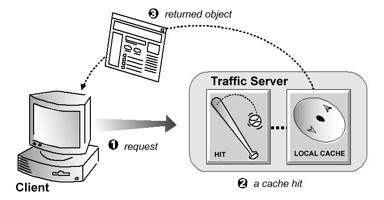
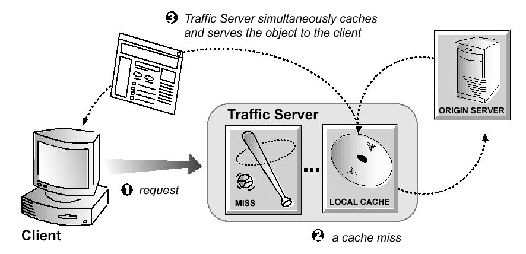

HTTP Proxy Caching¶
HTTP proxy caching enables you to store copies of frequently-accessed web objects (such as documents, images, and articles) and then serve this information to users on demand. It improves performance and frees up Internet bandwidth for other tasks.
Understanding HTTP Web Proxy Caching¶
Internet users direct their requests to web servers all over the Internet. A caching server must act as a web proxy server so it can serve those requests. After a web proxy server receives requests for web objects, it either serves the requests or forwards them to the origin server (the web server that contains the original copy of the requested information). The Traffic Server proxy supports explicit proxy caching, in which the user’s client software must be configured to send requests directly to the Traffic Server proxy. The following overview illustrates how Traffic Server serves a request.
Traffic Server receives a client request for a web object.
Using the object address, Traffic Server tries to locate the requested object in its object database (cache).
If the object is in the cache, then Traffic Server checks to see if the object is fresh enough to serve. If it is fresh, then Traffic Server serves it to the client as a cache hit (see the figure below).
A cache hit¶
If the data in the cache is stale, then Traffic Server connects to the origin server and checks if the object is still fresh (a revalidation). If it is, then Traffic Server immediately sends the cached copy to the client.
If the object is not in the cache (a cache miss) or if the server indicates the cached copy is no longer valid, then Traffic Server obtains the object from the origin server. The object is then simultaneously streamed to the client and the Traffic Server local cache (see the figure below). Subsequent requests for the object can be served faster because the object is retrieved directly from cache.
A cache miss¶
Caching is typically more complex than the preceding overview suggests. In particular, the overview does not discuss how Traffic Server ensures freshness, serves correct HTTP alternates, and treats requests for objects that cannot or should not be cached. The following sections discuss these issues in greater detail.
Ensuring Cached Object Freshness¶
When Traffic Server receives a request for a web object, it first tries to locate the requested object in its cache. If the object is in cache, then Traffic Server checks to see if the object is fresh enough to serve. For HTTP objects, Traffic Server supports optional author-specified expiration dates. Traffic Server adheres to these expiration dates; otherwise, it picks an expiration date based on how frequently the object is changing and on administrator-chosen freshness guidelines. Objects can also be revalidated by checking with the origin server to see if an object is still fresh.
HTTP Object Freshness¶
Traffic Server determines whether an HTTP object in the cache is fresh by checking the following conditions in order:
Checking the
Expiresormax-ageheaderSome HTTP objects contain
Expiresheaders ormax-ageheaders that explicitly define how long the object can be cached. Traffic Server compares the current time with the expiration time to determine if the object is still fresh.Checking the
Last-Modified/DateheaderIf an HTTP object has no
Expiresheader ormax-ageheader, then Traffic Server can calculate a freshness limit using the following formula:freshness_limit = ( date - last_modified ) * 0.10
where date is the date in the object’s server response header and last_modified is the date in the
Last-Modifiedheader. If there is noLast-Modifiedheader, then Traffic Server uses the date the object was written to cache. The value0.10(10 percent) can be increased or reduced to better suit your needs. Refer to Modifying Aging Factor for Freshness Computations.The computed freshness limit is bound by a minimum and maximum value. Refer to Setting Absolute Freshness Limits for more information.
Checking the absolute freshness limit
For HTTP objects that do not have
Expiresheaders or do not have bothLast-ModifiedandDateheaders, Traffic Server uses a maximum and minimum freshness limit. Refer to Setting Absolute Freshness Limits.Checking revalidate rules in
cache.configRevalidate rules apply freshness limits to specific HTTP objects. You can set freshness limits for objects originating from particular domains or IP addresses, objects with URLs that contain specified regular expressions, objects requested by particular clients, and so on. Refer to
cache.config.
Modifying Aging Factor for Freshness Computations¶
If an object does not contain any expiration information, then Traffic
Server can estimate its freshness from the Last-Modified and
Date headers. By default, Traffic Server stores an object for 10% of
the time that elapsed since it last changed. You can increase or reduce
the percentage according to your needs.
To modify the aging factor for freshness computations:
Change the value for
proxy.config.http.cache.heuristic_lm_factor.Run the
traffic_ctl config reloadcommand to apply the configuration changes.
Setting Absolute Freshness Limits¶
Some objects do not have Expires headers or do not have both
Last-Modified and Date headers. To control how long these
objects are considered fresh in the cache, specify an absolute
freshness limit.
To specify an absolute freshness limit:
Edit the variables
proxy.config.http.cache.heuristic_min_lifetimeandproxy.config.http.cache.heuristic_max_lifetimeinrecords.config.Run the
traffic_ctl config reloadcommand to apply the configuration changes.
Specifying Header Requirements¶
To further ensure freshness of the objects in the cache, configure
Traffic Server to cache only objects with specific headers. By default,
Traffic Server caches all objects (including objects with no headers);
you should change the default setting only for specialized proxy
situations. If you configure Traffic Server to cache only HTTP objects
with Expires or max-age headers, then the cache hit rate will be
noticeably reduced (since very few objects will have explicit expiration
information).
To configure Traffic Server to cache objects with specific headers:
Change the value for
proxy.config.http.cache.required_headersinrecords.config.Run the
traffic_ctl config reloadcommand to apply the configuration changes.
Cache-Control Headers¶
Even though an object might be fresh in the cache, clients or servers often impose their own constraints that preclude retrieval of the object from the cache. For example, a client might request that a object not be retrieved from a cache, or if it does allow cache retrieval, then it cannot have been cached for more than 10 minutes.
Traffic Server bases the servability of a cached object on Cache-Control
headers that appear in both client requests and server responses. The following
Cache-Control headers affect whether objects are served from cache:
The
no-cacheheader, sent by clients, tells Traffic Server that it should not serve any objects directly from the cache. When present in a client request, Traffic Server will always obtain the object from the origin server. You can configure Traffic Server to ignore clientno-cacheheaders. Refer to Configuring Traffic Server to Ignore Client no-cache Headers for more information.The
max-ageheader, sent by servers, is compared to the object age. If the age is less thanmax-age, then the object is fresh and can be served from the Traffic Server cache.The
min-freshheader, sent by clients, is an acceptable freshness tolerance. This means that the client wants the object to be at least this fresh. Unless a cached object remains fresh at least this long in the future, it is revalidated.The
max-staleheader, sent by clients, permits Traffic Server to serve stale objects provided they are not too old. Some browsers might be willing to take slightly stale objects in exchange for improved performance, especially during periods of poor Internet availability.
Traffic Server applies Cache-Control servability criteria after HTTP
freshness criteria. For example, an object might be considered fresh but will
not be served if its age is greater than its max-age.
Revalidating HTTP Objects¶
When a client requests an HTTP object that is stale in the cache, Traffic Server revalidates the object. A revalidation is a query to the origin server to check if the object is unchanged. The result of a revalidation is one of the following:
If the object is still fresh, then Traffic Server resets its freshness limit and serves the object.
If a new copy of the object is available, then Traffic Server caches the new object (thereby replacing the stale copy) and simultaneously serves the object to the client.
If the object no longer exists on the origin server, then Traffic Server does not serve the cached copy.
If the origin server does not respond to the revalidation query, then Traffic Server serves the stale object along with a
111 Revalidation Failedwarning.
By default, Traffic Server revalidates a requested HTTP object in the cache if it considers the object to be stale. Traffic Server evaluates object freshness as described in HTTP Object Freshness. You can reconfigure how Traffic Server evaluates freshness by selecting one of the following options:
- Traffic Server considers all HTTP objects in the cache to be stale:
Always revalidate HTTP objects in the cache with the origin server.
- Traffic Server considers all HTTP objects in the cache to be fresh:
Never revalidate HTTP objects in the cache with the origin server.
- Traffic Server considers all HTTP objects without
ExpiresorCache-controlheaders to be stale: Revalidate all HTTP objects without
ExpiresorCache-Controlheaders.
To configure how Traffic Server revalidates objects in the cache, you
can set specific revalidation rules in cache.config.
To configure revalidation options
Edit the variable
proxy.config.http.cache.when_to_revalidateinrecords.config.Run the
traffic_ctl config reloadcommand to apply the configuration changes.
Pushing Content into the Cache¶
Traffic Server supports the HTTP PUSH method of content delivery.
Using HTTP PUSH, you can deliver content directly into the cache
without client requests.
Configuring Traffic Server for PUSH Requests¶
Before you can deliver content into your cache using HTTP PUSH, you
must configure Traffic Server to accept PUSH requests.
Edit
ip_allow.yamlto allowPUSHfrom the appropriate addresses.Update
proxy.config.http.push_method_enabledinrecords.config:CONFIG proxy.config.http.push_method_enabled INT 1
Run the command
traffic_ctl config reloadto apply the configuration changes.
Understanding HTTP PUSH¶
PUSH uses the HTTP 1.1 message format. The body of a PUSH
request contains the response header and response body that you want to
place in the cache. The following is an example of a PUSH request:
PUSH http://www.company.com HTTP/1.0
Content-length: 84
HTTP/1.0 200 OK
Content-type: text/html
Content-length: 17
<HTML>
a
</HTML>
Important
Your PUSH headers must include Content-length, the value for which
must include both headers and body byte counts. The value is not optional,
and an improper (too large or too small) value will result in undesirable
behavior.
Tools that will help manage pushing¶
Traffic Server comes with a Perl script for pushing, tspush, which can assist with understanding how to write scripts for pushing content yourself.
Pinning Content in the Cache¶
The Cache Pinning Option configures Traffic Server to keep certain
HTTP objects in the cache for a specified time. You can use this option
to ensure that the most popular objects are in cache when needed and to
prevent Traffic Server from deleting important objects. Traffic Server
observes Cache-Control headers and pins an object in the cache only
if it is indeed cacheable.
To set cache pinning rules:
Enable
proxy.config.cache.permit.pinninginrecords.config:CONFIG proxy.config.cache.permit.pinning INT 1
Add a rule in
cache.configfor each URL you want Traffic Server to pin in the cache. For example:url_regex=^https?://(www.)?apache.org/dev/ pin-in-cache=12h
Run the command
traffic_ctl config reloadto apply the configuration changes.
Caching HTTP Objects¶
When Traffic Server receives a request for a web object that is not in the cache, it retrieves the object from the origin server and serves it to the client. At the same time, Traffic Server checks if the object is cacheable before storing it in its cache to serve future requests.
Traffic Server responds to caching directives from clients and origin servers, as well as directives you specify through configuration options and files.
Client Directives¶
By default, Traffic Server does not cache objects with the following request headers:
AuthorizationCache-Control: no-storeCache-Control: no-cacheTo configure Traffic Server to ignore this request header, refer to Configuring Traffic Server to Ignore Client no-cache Headers.
Cookie(for text objects)By default, Traffic Server caches objects served in response to requests that contain cookies (even if the object is text). You can configure Traffic Server to not cache cookied content of any type, cache all cookied content, or cache cookied content that is of image type only. For more information, refer to Caching Cookied Objects.
Configuring Traffic Server to Ignore Client no-cache Headers¶
By default, Traffic Server strictly observes client
Cache-Control: no-cache directives. If a requested object contains a
no-cache header, then Traffic Server forwards the request to the
origin server even if it has a fresh copy in cache. You can configure
Traffic Server to ignore client no-cache directives such that it
ignores no-cache headers from client requests and serves the object
from its cache.
Edit
proxy.config.http.cache.ignore_client_no_cacheinrecords.config.CONFIG proxy.config.http.cache.ignore_client_no_cache INT 1
Run the command
traffic_ctl config reloadto apply the configuration changes.
Origin Server Directives¶
By default, Traffic Server does not cache objects with the following response headers:
Cache-Control: no-storeCache-Control: privateWWW-AuthenticateTo configure Traffic Server to ignore
WWW-Authenticateheaders, refer to Configuring Traffic Server to Ignore WWW-Authenticate Headers.Set-CookieCache-Control: no-cacheTo configure Traffic Server to ignore
no-cacheheaders, refer to Configuring Traffic Server to Ignore Server no-cache Headers.Expiresheader with a value of 0 (zero) or a past date.
Configuring Traffic Server to Ignore Server no-cache Headers¶
By default, Traffic Server strictly observes Cache-Control: no-cache
directives. A response from an origin server with a no-cache header
is not stored in the cache and any previous copy of the object in the
cache is removed. If you configure Traffic Server to ignore no-cache
headers, then Traffic Server also ignores no-store headers. The
default behavior of observing no-cache directives is appropriate
in most cases.
To configure Traffic Server to ignore server no-cache headers:
Edit
proxy.config.http.cache.ignore_server_no_cacheinrecords.config.CONFIG proxy.config.http.cache.ignore_server_no_cache INT 1
Run the command
traffic_ctl config reloadto apply the configuration changes.
Configuring Traffic Server to Ignore WWW-Authenticate Headers¶
By default, Traffic Server does not cache objects that contain
WWW-Authenticate response headers. The WWW-Authenticate header
contains authentication parameters the client uses when preparing the
authentication challenge response to an origin server.
When you configure Traffic Server to ignore origin server
WWW-Authenticate headers, all objects with WWW-Authenticate
headers are stored in the cache for future requests. However, the
default behavior of not caching objects with WWW-Authenticate
headers is appropriate in most cases. Only configure Traffic Server to
ignore server WWW-Authenticate headers if you are knowledgeable
about HTTP 1.1.
To configure Traffic Server to ignore server WWW-Authenticate
headers:
Edit
proxy.config.http.cache.ignore_authenticationinrecords.config.CONFIG proxy.config.http.cache.ignore_authentication INT 1
Run the command
traffic_ctl config reloadto apply the configuration changes.
Configuration Directives¶
In addition to client and origin server directives, Traffic Server responds to directives you specify through configuration options and files.
You can configure Traffic Server to do the following:
Not cache any HTTP objects. Refer to Disabling HTTP Object Caching.
Cache dynamic content. That is, objects with URLs that end in
.aspor contain a question mark (?), semicolon (;), orcgi. For more information, refer to Caching Dynamic Content.Cache objects served in response to the
Cookie:header. Refer to Caching Cookied Objects.Observe
never-cacherules incache.config.
Disabling HTTP Object Caching¶
By default, Traffic Server caches all HTTP objects except those for
which you have set never-cache as action rules
in cache.config. You can disable HTTP object caching so that all HTTP
objects are served directly from the origin server and never cached, as
detailed below.
To disable HTTP object caching manually:
Set
proxy.config.http.cache.httpto0inrecords.config.CONFIG proxy.config.http.cache.http INT 0
Run the command
traffic_ctl config reloadto apply the configuration changes.
Caching Dynamic Content¶
A URL is considered dynamic if it ends in .asp or contains a
question mark (?), a semicolon (;), or cgi. By
default, Traffic Server caches dynamic content. You can configure the
system to ignore dynamic looking content, although this is recommended
only if the content is truly dynamic, but fails to advertise so with
appropriate Cache-Control headers.
To configure Traffic Server’s cache behaviour in regard to dynamic content:
Edit
proxy.config.http.cache.cache_urls_that_look_dynamicinrecords.config. To disable caching, set the variable to0, and to explicitly permit caching use1.CONFIG proxy.config.http.cache.cache_urls_that_look_dynamic INT 0
Run the command
traffic_ctl config reloadto apply the configuration changes.
Caching Cookied Objects¶
By default, Traffic Server caches objects served in response to requests that contain cookies. This is true for all types of objects including text. Traffic Server does not cache cookied text content because object headers are stored along with the object, and personalized cookie header values could be saved with the object. With non-text objects, it is unlikely that personalized headers are delivered or used.
You can reconfigure Traffic Server to:
Not cache cookied content of any type.
Cache cookied content that is of image type only.
Cache all cookied content regardless of type.
To configure how Traffic Server caches cookied content:
Edit
proxy.config.http.cache.cache_responses_to_cookiesinrecords.config.Run the command
traffic_ctl config reloadto apply the configuration changes.
Forcing Object Caching¶
You can force Traffic Server to cache specific URLs (including dynamic
URLs) for a specified duration, regardless of Cache-Control response
headers.
To force document caching:
Add a rule for each URL you want Traffic Server to pin to the cache
cache.config:url_regex=^https?://(www.)?apache.org/dev/ ttl-in-cache=6h
Run the command
traffic_ctl config reloadto apply the configuration changes.
Caching HTTP Alternates¶
Some origin servers answer requests to the same URL with a variety of
objects. The content of these objects can vary widely, according to
whether a server delivers content for different languages, targets
different browsers with different presentation styles, or provides
different document formats (HTML, XML). Different versions of the same
object are termed alternates and are cached by Traffic Server based
on Vary response headers. You can also limit the number of
alternate versions of an object allowed in the cache.
Limiting the Number of Alternates for an Object¶
You can limit the number of alternates Traffic Server can cache per object (the default is 3).
Important
Large numbers of alternates can affect Traffic Server cache performance because all alternates have the same URL. Although Traffic Server can look up the URL in the index very quickly, it must scan sequentially through available alternates in the object store.
To alter the limit on the number of alternates:
Edit
proxy.config.cache.limits.http.max_altsinrecords.config.CONFIG proxy.config.cache.limits.http.max_alts INT 5
Run the command
traffic_ctl config reloadto apply the configuration changes.
Using Transaction Buffering Control¶
By default, I/O operations are run at full speed, as fast as either Traffic
Server, the network, or the cache can support. This can be problematic for
large objects if the client side connection is significantly slower. In such
cases the content will be buffered in ram while waiting to be sent to the
client. This could potentially also happen for POST requests if the client
connection is fast and the origin server connection slow. If very large objects
are being used this can cause the memory usage of Traffic Server to become
very large.
This problem can be ameliorated by controlling the amount of buffer space used by a transaction. A high water and low water mark are set in terms of bytes used by the transaction. If the buffer space in use exceeds the high water mark, the connection is throttled to prevent additional external data from arriving. Internal operations continue to proceed at full speed until the buffer space in use drops below the low water mark and external data I/O is re-enabled.
Although this is intended primarily to limit the memory usage of Traffic Server it can also serve as a crude rate limiter by setting a buffer limit and then throttling the client side connection either externally or via a transform. This will cause the connection to the origin server to be limited to roughly the client side connection speed.
Traffic Server does network I/O in large chunks (32K or so) and therefore the granularity of transaction buffering control is limited to a similar precision.
The buffer size calculations include all elements in the transaction, including any buffers associated with transform plugins.
Transaction buffering control can be enabled globally by using configuration
variables or by TSHttpTxnConfigIntSet() in a plugin.
Value |
Variable |
|
|---|---|---|
Enable buffering |
|
|
Set high water |
|
|
Set low water |
|
Be careful to always have the low water mark equal or less than the high water mark. If you set only one, the other will be set to the same value.
If using TSHttpTxnConfigIntSet(), it must be called no later than
TS_HTTP_READ_RESPONSE_HDR_HOOK.
Reducing Origin Server Requests (Avoiding the Thundering Herd)¶
When an object can not be served from cache, the request will be proxied to the origin server. For a popular object, this can result in many near simultaneous requests to the origin server, potentially overwhelming it or associated resources. There are several features in Traffic Server that can be used to avoid this scenario.
Read While Writer¶
When Traffic Server goes to fetch something from origin, and upon receiving the response, any number of clients can be allowed to start serving the partially filled cache object once background_fill_completed_threshold % of the object has been received.
While some other HTTP proxies permit clients to begin reading the response immediately upon the proxy receiving data from the origin server, ATS does not begin allowing clients to read until after the complete HTTP response headers have been read and processed. This is a side-effect of ATS making no distinction between a cache refresh and a cold cache, which prevents knowing whether a response is going to be cacheable.
As non-cacheable responses from an origin server are generally due to that content being unique to different client requests, ATS will not enable read-while-writer functionality until it has determined that it will be able to cache the object.
The following settings must be made in records.config to enable
read-while-writer functionality in ATS:
CONFIG proxy.config.cache.enable_read_while_writer INT 1
CONFIG proxy.config.http.background_fill_active_timeout INT 0
CONFIG proxy.config.http.background_fill_completed_threshold FLOAT 0.000000
CONFIG proxy.config.cache.max_doc_size INT 0
All four configurations are required, for the following reasons:
proxy.config.cache.enable_read_while_writerbeing set to1turns the feature on, as it is off (0) by default.
The background fill feature (both
proxy.config.http.background_fill_active_timeoutandproxy.config.http.background_fill_completed_threshold) should be allowed to kick in for every possible request. This is necessary in the event the writer (the first client session to request the object, which triggered ATS to contact the origin server) goes away. Another client session needs to take over the writer.As such, you should set the background fill timeouts and threshold to zero; this assures they never time out and are always allowed to kick in.
The
proxy.config.cache.max_doc_sizeshould be unlimited (set to 0), since the object size may be unknown, and going over this limit would cause a disconnect on the objects being served.
Once these are enabled, you have something that is very close, but not quite the same, to Squid’s Collapsed Forwarding.
In addition to the above settings, the settings proxy.config.cache.read_while_writer.max_retries
and proxy.config.cache.read_while_writer_retry.delay allow to control the number
of retries TS attempts to trigger read-while-writer until the download of first fragment
of the object is completed:
CONFIG proxy.config.cache.read_while_writer.max_retries INT 10
CONFIG proxy.config.cache.read_while_writer_retry.delay INT 50
Open Read Retry Timeout¶
The open read retry configurations attempt to reduce the number of concurrent
requests to the origin for a given object. While an object is being fetched
from the origin server, subsequent requests would wait
proxy.config.http.cache.open_read_retry_time milliseconds before
checking if the object can be served from cache. If the object is still being
fetched, the subsequent requests will retry
proxy.config.http.cache.max_open_read_retries times. Thus, subsequent
requests may wait a total of (max_open_read_retries x open_read_retry_time)
milliseconds before establishing an origin connection of its own. For instance,
if they are set to 5 and 10 respectively, connections will wait up to
50ms for a response to come back from origin from a previous request, until
this request is allowed through.
Important
These settings are inappropriate when objects are uncacheable. In those
cases, requests for an object effectively become serialized. The subsequent
requests would await at least open_read_retry_time milliseconds before
being proxied to the origin.
It is advisable that this setting be used in conjunction with Read While Writer
for big (those that take longer than (max_open_read_retries x
open_read_retry_time) milliseconds to transfer) cacheable objects. Without
the read-while-writer settings enabled, while the initial fetch is ongoing, not
only would subsequent requests be delayed by the maximum time, but also, those
requests would result in unnecessary requests to the origin server.
Since ATS now supports setting these settings per-request or remap rule, you can configure this to be suitable for your setup much more easily.
The configurations are (with defaults):
CONFIG proxy.config.http.cache.max_open_read_retries INT -1
CONFIG proxy.config.http.cache.open_read_retry_time INT 10
The defaults are such that the feature is disabled and every connection is
allowed to go to origin without artificial delay. When enabled, you will try
max_open_read_retries times, each with an open_read_retry_time timeout.
Open Write Fail Action¶
In addition to the open read retry settings TS supports a new setting
proxy.config.http.cache.open_write_fail_action that allows to further
reduce multiple concurrent requests hitting the origin for the same object by
either returning a stale copy, in case of hit-stale or an error in case of cache
miss for all but one of the requests.